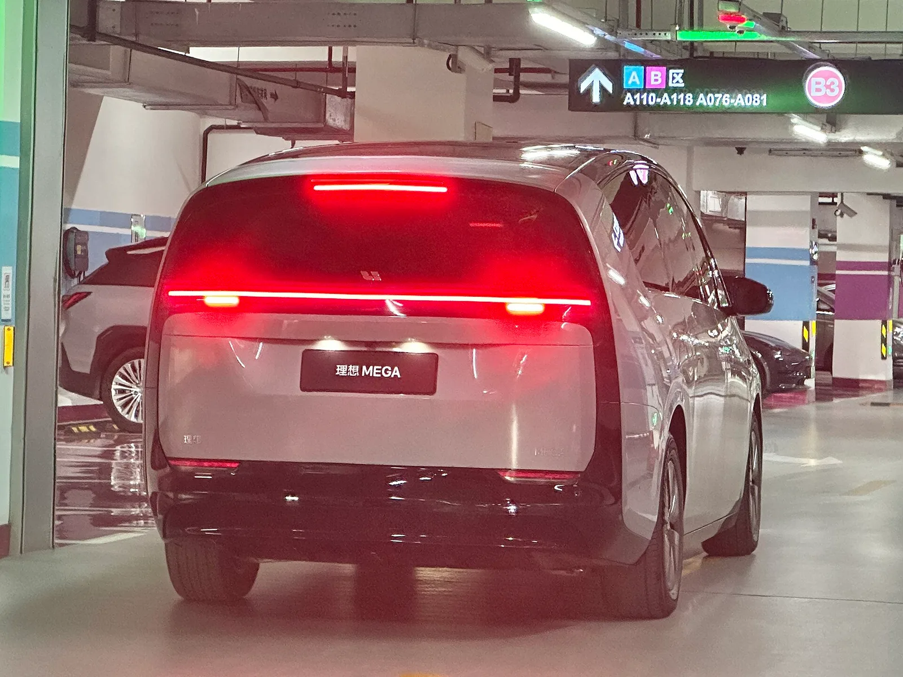
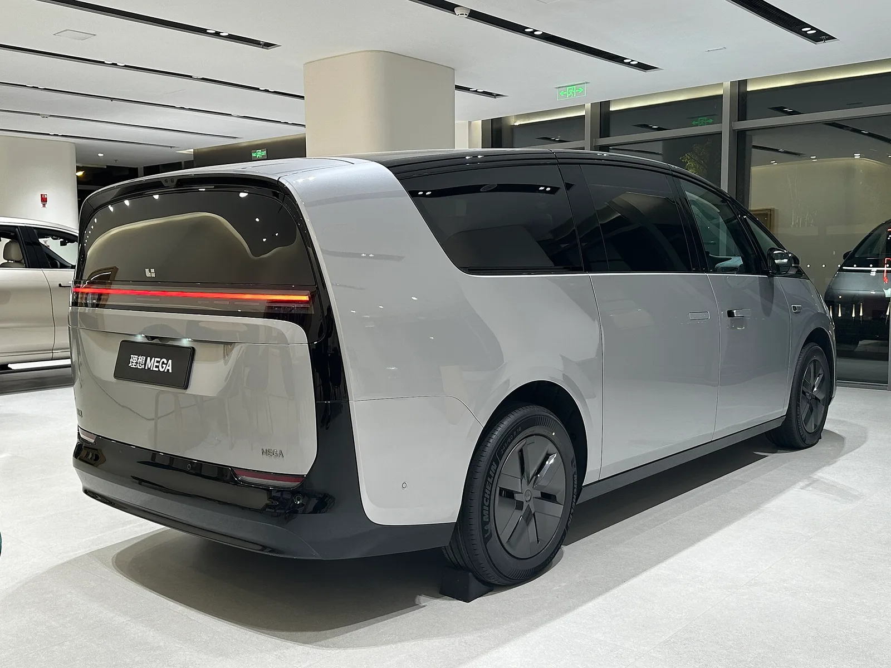
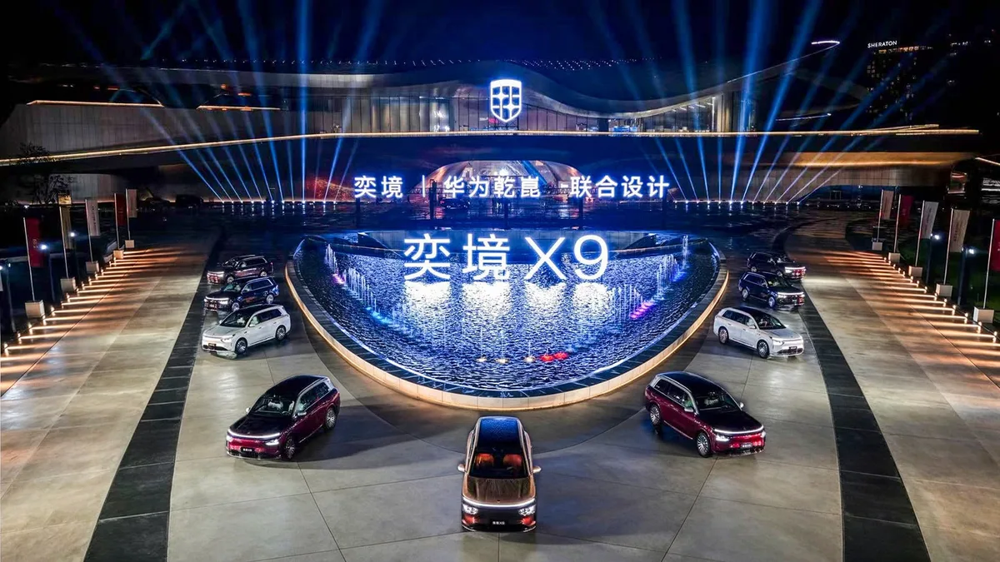

▲ 메가. 고속열차를 닮은 형태를 유지하면서 하체를 크게 바꿨다 ⓒ Wikimedia Commons
리 오토 메가는 생김새로 먼저 알려진 차입니다. 고속열차를 닮은 형태 때문에 공개 당시 논란이 컸습니다.
이번 부분변경에서 외관은 거의 그대로입니다. 대신 하체를 통째로 바꿨습니다.
듀얼챔버 에어서스펜션이 완전 액티브 방식으로 교체됩니다.
1. 액티브 서스펜션이란
| 방식 | 작동 | 한계 |
|---|---|---|
| 기계식 | 스프링과 댐퍼가 고정 특성으로 반응 | 조절 불가 |
| 가변 댐퍼 | 감쇠력만 전자 제어 | 흡수만 가능 |
| 에어서스펜션 | 공기압으로 차고·강성 조절 | 반응 속도 제한 |
| 완전 액티브 | 바퀴에 직접 힘을 가한다 | 원가·전력 소모 |
결정적 차이는 "밀 수 있느냐"입니다.
일반 서스펜션은 충격을 흡수만 합니다. 요철을 만나면 바퀴가 올라가고, 스프링이 그 힘을 받아 차체로 전달되는 양을 줄입니다. 수동적입니다.
액티브 서스펜션은 능동적으로 힘을 만듭니다. 코너에서 차체가 기울려 하면 바깥쪽 바퀴를 아래로 밀어 롤을 상쇄합니다. 요철을 만나기 전에 카메라로 미리 읽고 대응하는 방식도 있습니다.
미니밴에 이 기술을 넣는 이유는 명확합니다. 이 차는 뒷좌석에 사람을 태우는 차입니다. 2열·3열 승객이 느끼는 흔들림이 상품성의 핵심입니다.
2. 라이다를 하나 더 붙였다
| 구분 | 기존 | 변경 |
|---|---|---|
| 라이다 | 3개 | 4개 |
흐름과 반대되는 선택입니다. 앞서 웨이모는 6세대 시스템에서 센서를 42% 줄였습니다. 소프트웨어가 좋아지면 물리적 센서를 줄일 수 있다는 논리였습니다.
리 오토는 반대로 갔습니다. 이유는 사용 환경 차이로 볼 수 있습니다.
| 구분 | 웨이모 | 리 오토 |
|---|---|---|
| 운영 방식 | 회사가 직접 운영하는 플릿 | 개인이 사는 차 |
| 운행 지역 | 정밀 지도가 있는 한정 구역 | 전국 어디든 |
| 원가 압박 | 대당 원가가 사업성 | 고급 모델이라 여유가 있다 |
| 결론 | 줄인다 | 늘린다 |
52만 위안(약 1억 원)짜리 차에서 라이다 하나의 원가는 큰 비중이 아닙니다. 오히려 사양표에 적히는 숫자가 상품성이 됩니다.

▲ 라이다를 3개에서 4개로 늘렸다 — 센서를 줄이는 웨이모와 반대 방향이다
3. 파워트레인 변화
| 항목 | 기존 | 변경 |
|---|---|---|
| 배터리 | 102.7kWh | 108kWh (CATL 삼원계) |
| 후륜 모터 | 328마력 | 346마력(258kW) |
| 전륜 모터 | 208마력(155kW) | 동일 |
| 합산 | — | 554마력(413kW) |
| 주행거리 | — | CLTC 710km |
배터리는 5.3kWh, 후륜 모터는 18마력 늘었습니다. 큰 변화는 아닙니다.
주목할 점은 삼원계(NCM)를 유지한다는 것입니다. 중국 시장에서 LFP 전환이 빠르게 진행되는 가운데, 리 오토는 고급 모델에 삼원계를 남겼습니다. 에너지 밀도와 저온 성능 때문입니다.
2.7톤이 넘는 대형 미니밴에서 710km를 내려면 밀도가 높은 셀이 필요합니다.
4. 생김새는 왜 안 바꿨나
메가는 공개 당시 형태로 화제가 됐습니다. 고속열차 또는 관을 닮았다는 평가가 중국 소셜미디어에서 확산됐습니다.
이번 부분변경에서 바뀐 외관 요소는 제한적입니다.
| 부위 | 변경 |
|---|---|
| 휠 | 새 에어로 디자인 — 흰색·검정 솔리드 디스크 |
| 전면 | 크롬 액센트 추가 |
| 후면 | 스타일링 소폭 조정 |
| 전체 형태 | 유지 |
형태를 유지하는 것은 자신감의 표현일 수도, 비용의 문제일 수도 있습니다. 차체 금형을 바꾸는 것은 부분변경에서 감당하기 어려운 비용입니다.
다만 리 오토가 하체와 센서에 투자한 방향은 읽힙니다. 겉모습으로 설득하는 대신 타보면 느껴지는 것에 돈을 썼습니다.

▲ 외관은 휠과 크롬 액센트 정도만 바뀌었다
5. 국내 시장과 견주면
리 오토는 국내에 판매되지 않습니다. 다만 이 차가 놓인 자리는 국내에도 있습니다.
| 구분 | 리 오토 메가 | 국내 대응 차종 |
|---|---|---|
| 형식 | 순수전기 | 카니발(내연·하이브리드), 벤츠 V클래스 |
| 가격 | 약 1억~1억1,000만 원 | 카니발 상위 트림 5,000만 원대 |
| 서스펜션 | 완전 액티브 | 일반 또는 가변 댐퍼 |
| 주 용도 | 의전·가족 | 동일 |
가격대가 두 배 이상 차이 납니다. 메가는 미니밴이지만 사실상 플래그십 세단 가격에 놓여 있습니다.
중국에서 대형 전기 MPV가 이 가격대에 자리 잡았다는 사실 자체가 시장 구조의 차이를 보여줍니다. 뒷좌석에 사람을 태우는 문화가 강한 시장이기 때문입니다.

▲ 중국에서는 대형 전기 MPV가 플래그십 세단 가격대에 자리 잡았다
6. 정리
리 오토 메가가 부분변경을 거칩니다. 듀얼챔버 에어서스펜션이 바퀴에 직접 힘을 가하는 완전 액티브 방식으로 바뀌고, 라이다는 3개에서 4개로 늘며 후륜 조향이 추가됩니다.
배터리는 CATL 삼원계 102.7kWh → 108kWh, 후륜 모터는 328마력 → 346마력, 합산 554마력입니다. 주행거리는 CLTC 710km입니다.
가격은 홈 52만9,800위안(약 7만8,400달러), 울트라 55만9,800위안(약 8만2,900달러)입니다. 외관은 휠과 크롬 액센트 정도만 바뀌었고 전체 형태는 유지됩니다.